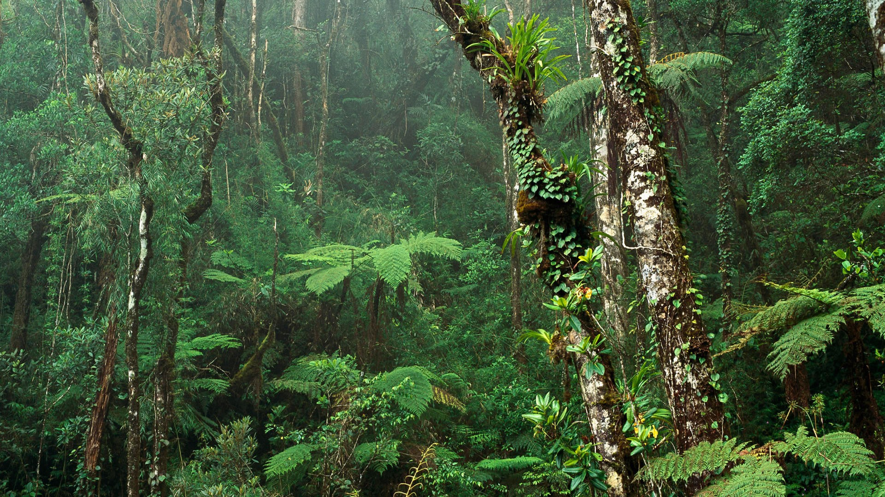
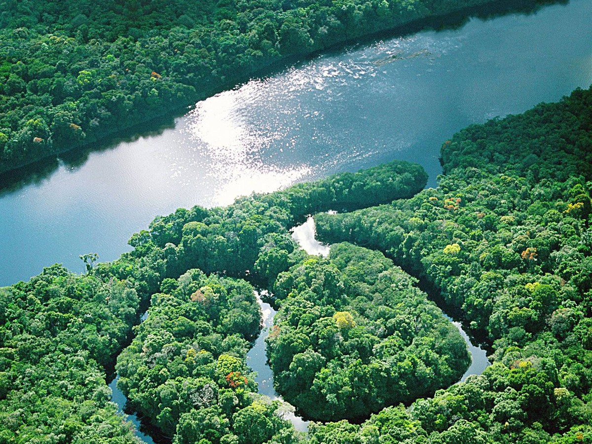

ΤΡΟΠΙΚΟ ΠΕΡΙΒΑΛΛΟΝ
Οι τροπικές περιοχές αποτελούνται από πανύψηλα δέντρα των οποίων οι ψηλότεροι κλάδοι αλληλοσυμπλέκονται και σχηματίζουν θόλους. Κάτω από τον ψηλότερο θόλο μπορεί να υπάρχουν άλλοι δυο ή τρεις επιπλέον θόλοι, σε διαφορετικά ύψη, ανάλογα με το πόσο ηλιακό φως μπορεί να περάσει μέσα από τα δέντρα. Ο χαμηλότερος θόλος μπορεί να έχει ύψος τουλάχιστον 10μ. από το έδαφος. Αποτέλεσμα αυτού είναι το ηλιακό φως να μην μπορεί να φθάσει μέχρι το δάπεδο του δάσους. Συνεπώς, η υποβλάστηση είναι λίαν περιορισμένη. Εντούτοις, υπάρχουν εκτεταμένα, προεξέχοντα ριζώματα και πολλά είδη κρεμαστών κλημάτων στα διάφορα επίπεδα θόλων.
Τα πυκνά δάση των τροπικών περιοχών έχουν πολύ υψηλό δείκτη ετήσιας βροχόπτωσης και η τροπική ζέστη δημιουργεί επίπεδα υγρασίας τα οποία, ορισμένες φορές προκαλούν σοβαρή εξάντληση στον άνθρωπο.
Το κορεσμένο από το νερό έδαφος των περιοχών τροπικής βλάστησης αποκλείει πλήρως κάθε τροχαία κίνηση εκτός οδών. Συνεπώς, στην πραγματικότητα, ο μόνος δυνατός τρόπος κίνησης μέσα από τα εδάφη τροπικής βλάστησης είναι η κίνηση με τα πόδιασ. Λόγω σχεδόν απουσίας υποβλάστησης, ο τρόπος αυτός κίνησης είναι αρκετά εύκολος σε ένα τροπικό δάσος, ιδίως σε σύγκριση με άλλα είδη δασών. Εντούτοις, το τροπικό δάσος παρουσιάζει άλλου είδους προβλήματα: λόγω του πυκνού θόλου, δε θα μπορεί να σας εντοπίσει από αέρος καμμιά ομάδα έρευνας και διάσωσης. Η ορατότητα του εδάφους περιορίζεται στα 50μ. και είναι πολύ εύκολο να χάσετε τον προσανατολισμό σας.
Εξοπλισμός - Εφόδια
Κάθε συλλογή επιβίωσης πρέπει να περιλαμβάνει αρκετά απωθητικά εντόμων. Αυτά που βασίζονται σε ένα στερεοποιημένο κομμάτι κεριού είναι τα πλέον κατάλληλα για περιοχές τροπικής βλάστησης και παρέχουν αποτελεσματική και μακράς διάρκειας προστασία.
Επίσης προσαρμόστε τη συλλογή επιβίωση σας, ώστε να περιλαμβάνει είδη για την αντιμετωπίση της φαγούρας του δέρματος, των δαγκωμάτων από φίδια κ.λ.π. Σε ένα τροπικό περιβάλλον ή οπουδήποτε αλλού τα ενοχλητικά έντομα παρουσιάζουν σοβαρό πρόβλημα θα πρέπει να έχετε μαζί σας αρκετό ύφασμα (τούλι) για κουνουπιέρες, ώστε να μειώνετε τον αριθμό των τσιμπιμάτων που θα απαιτούν περίθαλψη.
Τέλος, οποιοδήποτε προγραμματισμένο ταξίδι σε τροπικό περιβάλλον δικαιολογεί τον εφοδιασμό σας με ένα μεγάλο ειδικό μαχαίρι. Αυτό θα σας βοηθήσει να καθαρίζετε την βλάστηση από τον δρόμο σας και να διαμορφώσετε ένα χώρο καταυλισμού.
Ιματισμός
Ελαφρά και χαλαρά ρούχα που θα καλύπτουν πλήρως το σώμα είναι τα πιο κατάλληλα σε ένα τροπικό περιβάλλον. Αν φθάσετε σε κατάσταση επιβίωσης απροετοίμαστοι, ψάξτε να βρείτε κατάλληλα ρούχα ή χρησιμοποιήστε οποιοδήποτε διαθέσιμο υλικό για να φτιάξετε ένα οποιοδήποτε πρόχειρο ρούχο.
- Τα πουκάμισα πρέπει να έχουν μακριά μανίκια και να κουμπώνουν στον καρπό του χεριού και στο λαιμό.
- Τα μπάτζακια του παντελονιού πρέπει να μαζεύονται και να χώνονται μέσα στις κάλτσες ή τα άρβυλα.
- Εξασφαλίστε όλα τα χρήσιμα είδη επιβίωσης σε τσέπες ή γύρω από το λαιμό σας με θηλιές σπάγγου
- Βρείτε ή φτιάξτε μια εφεδρική φορεσιά ρούχων και διατηρείστε τη στεγνή, για να την χρησιμοποιήσετε στον ύπνο.
- Να φοράτε καπέλο με φαρδύ γύρο ή χείλος - αυτό βοηθάει να μην πέφτουν στο λαιμό σας μικρά κομμάτια από το δάσος και διάφορα ζωήφια.
Υγειονομικοί κινδύνοι
Προβλήματα Μυκητιάσεων - Η ζέστη και η υγρασία αποτελούν τις πιο ευνοϊκές συνθήκες για την ανάπτυξη δερματικών μολύνσεων από μύκητες και βακτηρίδια. Αυτός είναι ο λόγος για τον οποίο η ατομική υγιεινή είναι σημαντικό θέμα. Οποιοδήποτε μέρος του δέρματος είναι υγρό και δεν εκτίθεται στον αέρα, θα προκαλέσει προσβολή από κάποιο είδος μύκητα. Η μόλυνση των ποδιών από παρασιτικούς μύκητες και η μυκητώδης δερματοπάθεια που χαρακτηρίζεται απο δακτυλιοειδή μολυσματικά εξανθήματα είναι τύποι μυκητιάσεων. Η τροπική δερματική μόλυνση "Dhobu utch", είναι μια άλλη μορφή μυκητίασης που προσβάλλει την βουβωνική χώρα και προκαλεί φαγούρα. Οι μυκητιάσεις σπάνια εξαλείφονται από μόνες τους, ιδιαίτερα σε τέτοιες συνθήκες, όπως είναι οι τροπικές, και επομένως, μπορεί να χρειαστεί η χρησιμοποίηση μιας μυκητοκτόνου κρέμας για κάποιο χρονικό διάστημα.
Τροπική κνίδωση(φαγούρα) προκαλείται όταν οι ιδρωτοποιοί αδένες αποφράσσονται, προκαλώντας εξανθήματα. Αυτό συμβαίνει όταν το δέρμα είναι συνεχώς υγρό και ζεστό και είναι σύνηθες σε άτομα που δεν έχουν εγκλιματιστεί στο κλίμα των τροπικών περιοχών. Τα χαλαρά ρούχα βοηθούν στην αποτροπή της κατάστασης αυτής και το δέρμα ανακουφίζεται ρίχνοντας κρύο νερό πάνω στην ερεθισμένη επιφάνεια.
- Τα κουνούπια αναπτύσσονται σε στάσιμα ή ήρεμα νερά και σε ελώδη εδάφη. Αποφεύγετε τη δημιουργία καταυλισμού πλησίον τέτοιων σημείων. Αναζητήστε ψηλότερο έδαφος, όπου είναι δυνατό.
- Να φροντίζετε να παίρνετε ανθελονοσιακά φάρμακα σύμφωνα με ιατρικές οδηγίες και επί όσο διάστημα διαρκεί το απόθεμα των φαρμάκων σας.
- Τα κουνούπια απωθούνται επίσης, και με μια σιγοκαίουσα και καπνίζουσα φωτιά.